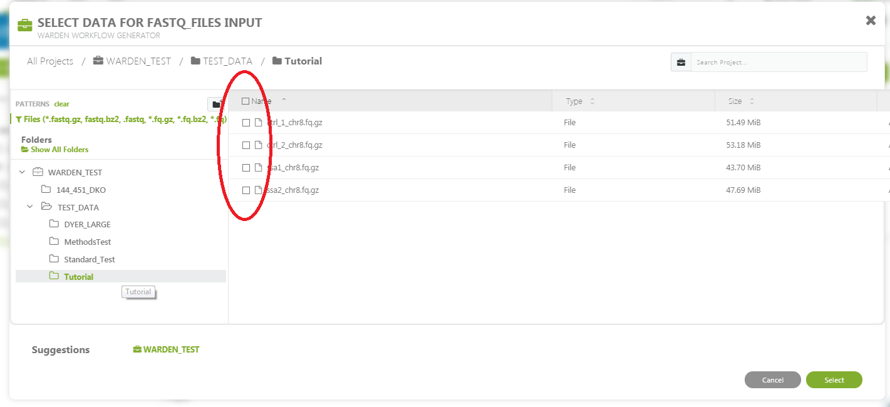

Pipeline Operation¶
Uploading Data¶
The WARDEN Differential Expression analysis pipeline takes Gzipped FastQ files generated from RNA-Seq data as input. You can upload the files you would like to run using the Data Transfer Application or by uploading data manually using the Getting Started with the Command Line.
Note
You should click “Start” before attempting to upload data to the tool (the tool’s workspace is only created once you do this). After you are redirected, you can safely close the tab that was just opened.
Sample Sheet Preparation¶
Once your data is uploaded, you’ll need to create a sample sheet which describes the relationship between case and control samples, phenotype/condition information, and the comparisons you would like to perform. The sample sheet is a tab-delimited text document that can be created in Microsoft Excel (recommended) or a text editor.
Note
You will also need to upload your sample sheet following the instructions at Uploading Data.
Microsoft Excel¶
Recommended: Download the sample excel spreadsheet.
The final product for the excel spreadsheet will look like this. The screenshot below. If you create the sample sheet from scratch, please ensure the the columns are exactly in this order.

Sample Rows¶
Each row in the spreadsheet (disregarding the last row) corresponds to a sample (either one or two fastq files). You should fill in these rows based on your data.
Tip
Please use these guidelines when filling in the sample sheet.
- The sample name should be unique and should only contain letters, numbers and underscores.
- The condition/phenotype column associates similar samples together. The values should contain only letters, numbers and underscores.
- ReadFile1 should contain forward reads (e.g.
*.R1.fastq.gzor*_1.fastq.gz) - ReadFile2 will contain reads in reverse orientation to ReadFile2. (e.g.
*.R2.fastq.gzor*_2.fastq.gz). - For single end reads a single dash (‘-‘) should be entered in the ReadFile2 column.
Comparison Row¶
The last line in the sample sheet is called the “comparison row”. This line
specifies the comparisons to be done between conditions/phenotypes.
All pairwise combinations can be analyzed.
To specifiy the comparisons, on a seperate line, include #comparisons= followed be a comma separated list of two conditions separated by a dash.
The following lines are all valid examples.
#comparisons=KO-WT#comparisons=Condition1-Control,Condition2-Control#comparisons=Phenotype2-Phenotype1,Phenotype3-Phenotype2,Phenotype3-Phenotype1
Note
If a comparison has at least 3 samples for each condition/phenotype, VOOM/LIMMA will be run. A simple differential comparison will be run on all samples.
Finalizing the Sample Sheet¶
To finalize the sample sheet, save the Microsoft Excel file with whatever name you like. Save the file as an Excel Workbook with the .xlsx extension.
Text Editor¶
Creating a sample sheet with a text editor is an option for advanced users.
Recommended: Download the sample text file.
The process of creating a sample sheet with a text editor is the same as creating one with Microsoft Excel, with the small difference that you must manually create your columns using the tab character. Save the file with a .txt extension.
Pipeline Configuration¶
Click “Start” on the tool’s landing page. You will be redirected to the tool’s workspace, and the workflow screen should automatically pop up.
Note
The WARDEN tool operation is slightly different than the other pipelines because it accepts a variable number of samples. First, you will run a “bootstrapping” step that creates a custom executable for your analysis. Second, you will need to manually execute the generated workflow from the first step. This allows us to take advantage of many nice features, like checkpointing and cost-reduction.
Step 1: Bootstrap Workflow¶
The required inputs appear on the left side of the screen. You should see an image similar to the picture below.

Click on the
FASTQ_FILESfield.
In the file dialog that pops up, select the FastQ files that will be included in the analysis. Where the FastQ files will be depends on how you uploaded them, but usually, they will either be in the main folder that pops up or the “uploads” folder in the left pane.
Once you are done selecting FastQ files, press “Select”.

Click on the the
sampleListinput box.
Select the sample sheet that you uploaded in Sample Sheet Preparation. This should be an Excel workbook with the .xlsx extension or a plain tab-delimited text file with a .txt extension.

All of the input files should now be hooked up. Next, we need to configure the remaining parameters for the pipeline, such as reference genome and sequencing method.
Click on the black box labelled
WARDEN WORKFLOW GENERATOR.
In the
Output Folderfield, select a folder to output to. You can structure your experiments however you like (if you’re not sure, just use/).
In the
analysisNamefield, enter a prefix for all of the output files.
Select the
sequenceStandednesspull down menu. Choose the appropriate box. This information can be determined from the sequencing or source of the data. If unknown select “no”.
Select the
Genomepulldown menu. Choose the appropriate box.
The LIMMA parameters can be left alone for most analyses. If you are an advanced LIMMA user, you can change the various settings exposed below the required parameters.
When all parameters have been set, the save button can be selected.

Once your inputs are selected, you should be able to start the workflow by clicking the “Run as Analysis…” button in the top right hand corner of the workflow dialog.

Note
If you cannot click this button, please ensure that (1) all of the inputs are correctly hooked up and (2) all of the required parameters are set.
Step 2: Run Workflow¶
You will see the workflow generator running, similar to the screenshot below.

When the custom workflow has finished generating, the word ‘Done’ will appear in green in the status column. This indicates that the bootstrapping step has completed successfully. Now, you need to run the custom workflow manually.
Wait for the workflow generator to finish.
Click on the WARDEN name in the name column.

You will now be on a page specific to the running of the workflow. On the left side, you will see the inputs you selected for the workflow generator. On the right side are the output files (including the generated workflow). Select the generated workflow as shown in the picture below.

You will now be within the output folder you specified earlier. Select the file that begins with ‘WARDEN WORKFLOW:’

A workflow generated for your data will be presented to you. Select ‘Run as analysis’ in the upper right.

The workflow will initiate, and you will be brought to the ‘Monitor’ page. (Note to get back to this page, you can select ‘Monitor’ on one of the menu bars near the top ) Expand the the workflow progress be selecting the ‘+’ sign next to ‘In Progress’

As parts of the pipeline are run, you will see different tasks in different colors. Green means done, blue is running, orange is waiting, and red means error.

When done the status will be shown as ‘Done’. Select the Workflow name under Status.

You will be brought to a page that show more information about the workflow analysis. Click on the output folder to go to the output.

The output folders will now be shown.

For a description of the output, please refer to Analysis of Results.